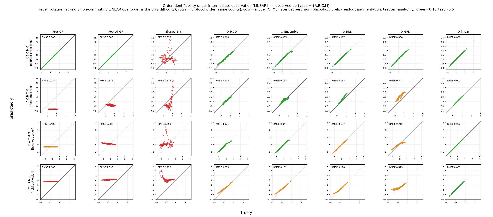

Claim 1 · Intermediate observation repairs the limits of identifiability
Under linear order stress, the operation order — unsolvable by terminal readout alone — is made identifiable by intermediate observation during training, but only for compositional models. The by-design identifiable OFML-linear gives the lower bound (\(\eps=0.002\)), and the flexible neural OFMLs (Ensemble / MCD / BNN / GPN) are strongly rescued from 0.44–0.72 with empty observation to 0.09–0.26 on the full-observation subset. In contrast, the count- (operation-count-) descriptor-based Shared-Ens / Pooled-GP / Prot-GP stay flat even when receiving the same observations (1.078→1.067, 0.795→0.790, 0.771→0.765) — because order is not carried by count features, the observation rows are not exploited. This is the asymmetry of Claim 1.

order_rotation) intermediate-observation ablation (traceablation2). Example for the full-observation subset \(S=\{A,B,C,M\}\). Rows = held-out order, columns = model, cells = per-proto RMSE (\(\approx\NRMSE\), darker is better). Observation is at training time only; evaluation is terminal only. Click to enlarge.Supports Claim 1, "Intermediate observation repairs the limits of identifiability." We rerun the linear order design of Figure 3b under each observation subset \(S\subseteq\{A,B,C,M\}\) (all \(2^4=16\) of them) and ask whether intermediate observation makes the operation order — unsolvable by terminal readout alone — identifiable. There are two aims: (i) for compositional OFML, increasing \(S\) should drive the per-proto error down toward the lower bound (0.002 of OFML-linear), and (ii) for count-descriptor models that cannot represent ordering information, the same observations should be inert (flat) — that is, to demonstrate the asymmetry that "observation helps only surrogate models that can represent the operators as the true maps."
We rerun the linear order design (order_rotation) under each observation subset \(S\subseteq\{A,B,C,M\}\). The source is a family of protocols (12 of them) with the same operation count but differing only in order, and the target is 3 held-out order protocols. Intermediate observation is realized by placing an observer module \(O_{op}\) at the position of the observed operation type op ∈ S and supplying its output at training time only (evaluation is terminal only). What is observed is the true 2D state right after applying that operation \(s^{\star}_{op}\) (post-op, noise-free). The main statistical unit is 16 subsets × 3 seeds, and we report the per-proto RMSE (\(\approx\NRMSE\)) averaged over the 3 held-out order protocols × 3 seeds within each subset, reading primarily the change from empty observation (\(S=\varnothing\), terminal only) to full observation (\(S=\{A,B,C,M\}\)). D does not appear in these protocols, and the terminal observer O is already observed at the terminal, so it is not included in \(S\).
* On the metric: this figure derives from a trace ablation whose underlying data is per-proto RMSE, so in the table and text we write it explicitly as RMSE (= \(\NRMSE\) approximation). Each target is generated from the same area-preserving linear family and shares a common self-scale, so the raw RMSE is a good approximation of the macro \(\NRMSE\). The central-result cost-indexed curve (Figure 2) uses the exact \(\NRMSE\).
| Group | Model | Structure | How observation is received |
|---|---|---|---|
| Compositional OFML | OFML-linear | Compositional affine-linear model with the same operation structure as the true family (identifiable by design) | Per-operation-type linear alignment \(O_{op}\) (reference giving the lower bound) |
OFML-Ensemble | Compositional net TerminalOnlyOFML + seed-only 5-member deep ensemble | Per-operation-type learnable \(O_{op}:\mathbb{R}^d\!\to\!\mathbb{R}^2\) | |
OFML-MCD | Compositional net + Monte-Carlo Dropout (uncertainty) | Same as above (parallel, non-destructive side branch) | |
OFML-BNN | Compositional net + variational Bayesian NN readout | Same as above | |
OFML-GPN | Compositional net + deep-kernel GP readout (Gaussian process neural) | Same as above | |
| count-descriptor black box | Shared-Ens | 5-member MLP based on operation-count descriptors (order-blind) | No observer → same information supplied via the prefix-readout extension |
Pooled-GP | A single pooled GP over count descriptors | Same as above (prefix-readout) | |
Prot-GP | An independent GP per protocol (count) descriptor | Same as above (prefix-readout) |
The metric is the per-proto RMSE of the held-out order at each observation subset \(S\), averaged over seeds and orders: \[ \eps(S)=\frac{1}{|H|\,R}\sum_{p\in H}\sum_{r=1}^{R}\underbrace{\sqrt{\mathrm{mean}_{x}\big(\mu^{(r)}_p(x)-f_p(x)\big)^2}}_{\text{per-proto }\RMSE\ (\approx\,\NRMSE)},\qquad |H|=3,\ R=3. \] The auxiliary observation loss of the OFML group adds \[ \mathcal{L}_{\mathrm{obs}}=\sum_{o\in S}\norm{O_o(s_o)-s^{\star}_o}^2 \] to the terminal loss (a \(2\times2\) alignment if \(d=2\), a \(d\!\to\!2\) projection if \(d>2\)). We do not use a single shared alignment, in order to remove its gauge freedom (the non-identifiability of contractive/expansive realizations). Because the black-box group has no attached latent module, we supply the terminal scalar \(y=\mathrm{readout}(s^{\star}_{\text{after }t})\) of the prefix protocol \(op_1\dots op_t\,O\) as an additional training row (the prefix-readout extension).
Intermediate observation is realized by placing an observer module O_op at the position of the observed operation type op ∈ S (S ⊆ {A,B,C,M}) and observing its output at training time only. What O_op observes is the true 2D state right after applying that operation state*_op = s_v† = F_op†(z_v†) (post-op, noise-free) — that is, O_A observes "(s₀,s₁) right after applying A" and O_M observes "the state right after applying M." D does not appear in these protocols, and the terminal observer O is already observed at the terminal, so it is not included in S.
On the OFML side (compositional models): for each observed operation type we attach a separate-per-operation-type learnable observer O_op : ℝᵈ→ℝ² (bias-free linear) and add the auxiliary loss Σ_{op∈S} ‖O_op(s_op) − state*_op‖² to the terminal loss (a 2×2 alignment if d=2, a d→2 projection if d>2). We do not use a single shared alignment, in order to remove its gauge freedom (the non-identifiability of contractive/expansive realizations) and to curb the count C^k divergence.
Parallel, non-destructive side branch: the main compositional flow propagates the latent s ← g_θ_op(s) in its full d dimensions, and downstream operations (e.g., B) receive the latent s itself from the preceding stage (e.g., A). O_op(s) is merely a parallel readout head mapping the latent at that point into 2D; it only supplies an auxiliary loss and does not rewrite s. Hence O_A is not connected to B, and even with observation the forward-propagation graph and the composition are unchanged, so observation acts only as an additional gradient constraint on the latent (analogous to a non-destructive measurement that does not alter the sample). In models with d>2 the latent holds more information than the 2 observed dimensions, and O_op learns its d→2 projection.
The black-box side has no observer: because there is no latent module to attach, the same information is supplied via the prefix-readout extension — for each observed position t, we add a training row that observes, as a scalar, the terminal readout of the prefix protocol op₁ … op_t O, i.e. y = readout(state*_after_t). Thus O_A, O_B, O_C, O_M are OFML-only, and the black boxes receive only the prefix scalar readout.
We reuse the order task of Figure 3b (linear order_rotation) as is (12 source protocols, 3 held-out order targets). In addition, the observation subset S ⊆ {A,B,C,M} (all 16) is observed at training time only (evaluation is terminal only). Because the sources have the same operation count and differ only in order, order-blind aliasing is directly exposed.
| Element | Value | Property |
|---|---|---|
| source training | 12 source protocols (identical to Figure 3b, same count, different order) | order is the only difficulty |
| observation subset \(S\) | \(S\subseteq\{A,B,C,M\}\), all \(2^4=16\) | training time only; terminal evaluation unchanged |
| intermediate observation \(s^{\star}_{op}\) | true 2D state right after the observed operation (post-op) | noise-free (ground truth) |
| test | 3 held-out order protocols, terminal readout only | orders disjoint from the source |
| seed | 3 seeds (repeated per subset) | averaged over order × seed |
Hovering over a module type highlights the same shared operation across all protocols (= weight sharing). This visualizes that the same-count, different-order targets "cannot be distinguished without seeing the order."
Compositional OFML is rescued by observation; count descriptors stay flat. The by-design identifiable OFML-linear is already at \(\eps=0.006\) with empty observation and gives the lower bound of \(0.002\) under full observation. The flexible neural OFMLs are all strongly rescued: Ensemble 0.440→0.091, MCD 0.455→0.129, BNN 0.628→0.132, GPN 0.717→0.264. In contrast, the 3 count-descriptor-based models are essentially unchanged even when receiving the same observations (Shared-Ens 1.078→1.067, Pooled-GP 0.795→0.790, Prot-GP 0.771→0.765).
| Group | Model | \(\varnothing\) (terminal only) | all \(\{A,B,C,M\}\) |
|---|---|---|---|
| Compositional OFML | OFML-linear (identifiable by design) | 0.006 | 0.002 |
| OFML-Ensemble | 0.440 | 0.091 | |
| OFML-MCD | 0.455 | 0.129 | |
| OFML-BNN | 0.628 | 0.132 | |
| OFML-GPN | 0.717 | 0.264 | |
| count-descriptor black box | Shared-Ens | 1.078 | 1.067 |
| Pooled-GP | 0.795 | 0.790 | |
| Prot-GP | 0.771 | 0.765 |
The compositional OFML group achieves roughly a 4–8× error reduction from \(\varnothing\to\) all (with \(\eps\) approaching the lower bound 0.002). The count-descriptor group changes only by about 1% and cannot exploit the observation rows.
Observation identifies the operation order that terminal readout cannot resolve — but only for compositional models. Under linear order stress, the flexible neural OFMLs are rescued from 0.44–0.72 with empty observation to 0.09–0.26 under full observation, approaching the lower bound 0.002 of the by-design identifiable OFML-linear. This is because the observation loss \(\mathcal{L}_{\mathrm{obs}}\) supplies a gradient constraint directly to the latent module of each operation type, providing the identifying signal (which operation acted in which order and how) that was missing in terminal-only.
In contrast, the count-descriptor black boxes remain at 0.77–1.08 even when receiving the same observations — because order cannot be represented by count features, there is no place to load the added observation rows (even given the prefix-readout, order cannot be recovered). This is the asymmetry of Claim 1: observation helps only surrogate models that can represent the operators as the true maps. For the order result of forward transfer itself (no observation) see Figure 3b, for observation rescue under nonlinear order see Figure 8, for the observation ablation under count stress see the count version, and for s0 parity see the s0 version.
* Limitations: the per-proto RMSE is an approximation of the \(\NRMSE\) that self-scale-normalizes each target (valid because the linear family shares a common self-scale). Observation is given at training time only and evaluation is terminal only (no intermediate state is required at deployment). The 0.002 of OFML-linear is the lower bound owing to its structural match with the true family, and the other models aim for its neighborhood. As the representative column we report full observation \(\{A,B,C,M\}\) rather than the "best" among the 16 subsets (the best value among partial subsets falls within the rescue range in the main text).
Intermediate observation makes linear order identifiable because observation shrinks \(\ker\Phi\) and moves it toward the rank condition \(\ker\Phi\subseteq\ker\Psi\) (Proposition 4). The observation loss \(\mathcal{L}_{\mathrm{obs}}\) stacks the intermediate state of each operation type as additional rows onto the source rows, enlarging the row space of \(\Phi\) — this excites the order directions that in terminal-only had fallen into \(\ker\Phi\setminus\ker\Psi\). Only compositional models benefit because the observer \(O_{op}\) acts as a gradient constraint on the per-operation-type latent module, whereas count descriptors have no degree of freedom to carry the order direction. The relaxation of the depth limit via intermediate observation (circumventing the terminal-only depth restriction) corresponds to Proposition 6.